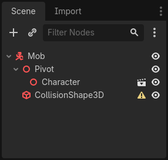
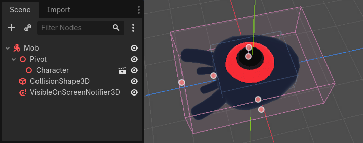
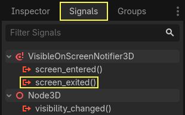

Thiết kế scene quái vật
Trong phần này, bạn sẽ viết code cho quái vật, mà chúng ta sẽ gọi là mob. Trong bài tiếp theo, chúng ta sẽ sinh chúng ngẫu nhiên quanh khu vực chơi.
Hãy thiết kế bản thân các quái vật trong một scene mới. Cấu trúc node sẽ tương tự như scene player.tscn.
Một lần nữa, tạo một scene với node gốc là CharacterBody3D. Đặt tên là Mob. Thêm một node con Node3D, đặt tên là Pivot. Rồi kéo thả file mob.glb từ dock FileSystem vào Pivot để thêm mô hình 3D của quái vật vào scene.

Bạn có thể đổi tên node mob vừa được tạo thành Character.

Chúng ta cần một collision shape để body hoạt động. Nhấp chuột phải vào node Mob, node gốc của scene, và nhấp Add Child Node.

Thêm một CollisionShape3D.

Trong Inspector, gán một BoxShape3D cho thuộc tính Shape.

Chúng ta nên thay đổi kích thước của nó để khớp hơn với mô hình 3D. Bạn có thể làm điều này một cách trực quan bằng cách nhấp và kéo các chấm màu cam.
Hộp nên chạm sàn và mỏng hơn mô hình một chút. Engine vật lý hoạt động theo cách mà chỉ cần quả cầu của người chơi chạm vào góc của hộp là va chạm sẽ xảy ra. Nếu hộp hơi quá lớn so với mô hình 3D, bạn có thể chết khi vẫn còn cách xa quái vật, và người chơi sẽ cảm thấy trò chơi không công bằng.

Hãy để ý rằng hộp của tôi cao hơn quái vật. Điều này không sao trong trò chơi này vì chúng ta nhìn scene từ trên xuống và dùng một góc nhìn cố định. Collision shape không cần khớp chính xác với mô hình. Chính cảm giác khi bạn chơi thử mới là thứ quyết định hình dạng và kích thước của chúng.
Xóa quái vật khi ra khỏi màn hình
Chúng ta sẽ sinh quái vật theo các khoảng thời gian đều đặn trong màn chơi. Nếu không cẩn thận, số lượng của chúng có thể tăng lên vô hạn, và chúng ta không muốn điều đó. Mỗi instance mob đều tốn cả bộ nhớ lẫn chi phí xử lý, và chúng ta không muốn trả giá cho nó khi mob đã ở ngoài màn hình.
Khi một quái vật rời khỏi màn hình, chúng ta không cần nó nữa, nên chúng ta nên xóa nó. Godot có một node phát hiện khi đối tượng rời khỏi màn hình, VisibleOnScreenNotifier3D, và chúng ta sẽ dùng nó để hủy các mob.
Ghi chú
Khi bạn liên tục tạo instance của một đối tượng, có một kỹ thuật gọi là pooling mà bạn có thể dùng để tránh chi phí tạo và hủy instance liên tục. Kỹ thuật này gồm việc tạo trước một mảng đối tượng và tái sử dụng chúng nhiều lần.
Khi làm việc với GDScript, điều này thường không cần thiết. Lý do chính để dùng pool là tránh hiện tượng giật hình với các ngôn ngữ có garbage collection như C# hoặc Lua. GDScript dùng một kỹ thuật khác để quản lý bộ nhớ, đó là đếm tham chiếu (reference counting), vốn không có nhược điểm đó. Bạn có thể tìm hiểu thêm tại đây: Quản lý bộ nhớ.
Chọn node Mob và thêm một node con VisibleOnScreenNotifier3D. Một hộp khác, lần này màu hồng, xuất hiện. Khi hộp này hoàn toàn rời khỏi màn hình, node sẽ phát ra một signal.

Thay đổi kích thước của nó bằng các chấm màu cam cho đến khi nó bao phủ toàn bộ mô hình 3D.

Viết code cho chuyển động của mob
Hãy triển khai chuyển động của quái vật. Chúng ta sẽ làm việc này theo hai bước. Đầu tiên, chúng ta sẽ viết một script cho Mob định nghĩa một hàm để khởi tạo quái vật. Sau đó, chúng ta sẽ viết code cho cơ chế sinh ngẫu nhiên trong scene main.tscn và gọi hàm đó từ đó.
Gắn một script vào Mob.

Đây là code chuyển động để bắt đầu. Chúng ta định nghĩa hai thuộc tính, min_speed và max_speed, để xác định một khoảng tốc độ ngẫu nhiên, mà sau này chúng ta sẽ dùng để xác định CharacterBody3D.velocity.
extends CharacterBody3D
# Minimum speed of the mob in meters per second.
@export var min_speed = 10.0
# Maximum speed of the mob in meters per second.
@export var max_speed = 18.0
func _physics_process(_delta):
move_and_slide()
using Godot;
public partial class Mob : CharacterBody3D
{
// Don't forget to rebuild the project so the editor knows about the new export variable.
// Minimum speed of the mob in meters per second
[Export]
public float MinSpeed { get; set; } = 10.0f;
// Maximum speed of the mob in meters per second
[Export]
public float MaxSpeed { get; set; } = 18.0f;
public override void _PhysicsProcess(double delta)
{
MoveAndSlide();
}
}
Tương tự như người chơi, chúng ta di chuyển mob mỗi frame bằng cách gọi hàm CharacterBody3D.move_and_slide(). Lần này, chúng ta không cập nhật velocity mỗi frame; chúng ta muốn quái vật di chuyển với tốc độ không đổi và rời khỏi màn hình, ngay cả khi nó va phải chướng ngại vật.
Chúng ta cần định nghĩa một hàm khác để tính CharacterBody3D.velocity. Hàm này sẽ xoay quái vật về phía người chơi và ngẫu nhiên hóa cả góc chuyển động lẫn vận tốc của nó.
Hàm sẽ nhận các đối số là start_position, vị trí sinh ra của mob, và player_position.
Chúng ta đặt mob tại start_position và xoay nó về phía người chơi bằng phương thức look_at_from_position(), rồi ngẫu nhiên hóa góc bằng cách xoay một lượng ngẫu nhiên quanh trục Y. Ở dưới, randf_range() cho ra một giá trị ngẫu nhiên trong khoảng từ -PI / 4 radian đến PI / 4 radian.
# This function will be called from the Main scene.
func initialize(start_position, player_position):
# We position the mob by placing it at start_position
# and rotate it towards player_position, so it looks at the player.
look_at_from_position(start_position, player_position, Vector3.UP)
# Rotate this mob randomly within range of -45 and +45 degrees,
# so that it doesn't move directly towards the player.
rotate_y(randf_range(-PI / 4, PI / 4))
// This function will be called from the Main scene.
public void Initialize(Vector3 startPosition, Vector3 playerPosition)
{
// We position the mob by placing it at startPosition
// and rotate it towards playerPosition, so it looks at the player.
LookAtFromPosition(startPosition, playerPosition, Vector3.Up);
// Rotate this mob randomly within range of -45 and +45 degrees,
// so that it doesn't move directly towards the player.
RotateY((float)GD.RandRange(-Mathf.Pi / 4.0, Mathf.Pi / 4.0));
}
Chúng ta đã có một vị trí ngẫu nhiên, giờ cần một random_speed. randf_range() sẽ hữu ích vì nó cho ra các giá trị số thực ngẫu nhiên, và chúng ta sẽ dùng min_speed và max_speed. random_speed chỉ là một số thực, và chúng ta chỉ dùng nó để nhân với CharacterBody3D.velocity. Sau khi áp dụng random_speed, chúng ta xoay Vector3 CharacterBody3D.velocity về phía người chơi.
func initialize(start_position, player_position):
# ...
# We calculate a random speed (float)
var random_speed = randf_range(min_speed, max_speed)
# We calculate a forward velocity that represents the speed.
velocity = Vector3.FORWARD * random_speed
# We then rotate the velocity vector based on the mob's Y rotation
# in order to move in the direction the mob is looking.
velocity = velocity.rotated(Vector3.UP, rotation.y)
public void Initialize(Vector3 startPosition, Vector3 playerPosition)
{
// ...
// We calculate a random speed (float).
float randomSpeed = GD.RandRange(MinSpeed, MaxSpeed);
// We calculate a forward velocity that represents the speed.
Velocity = Vector3.Forward * randomSpeed;
// We then rotate the velocity vector based on the mob's Y rotation
// in order to move in the direction the mob is looking.
Velocity = Velocity.Rotated(Vector3.Up, Rotation.Y);
}
Rời khỏi màn hình
Chúng ta vẫn phải hủy các mob khi chúng rời khỏi màn hình. Để làm vậy, chúng ta sẽ kết nối signal screen_exited của node VisibleOnScreenNotifier3D với Mob.
Chọn node VisibleOnScreenNotifier3D và ở phía bên phải giao diện, chuyển đến dock Signals. Nhấp đúp vào signal screen_exited().

Kết nối signal với Mob

Thao tác này sẽ thêm một hàm mới cho bạn trong script của mob, _on_visible_on_screen_notifier_3d_screen_exited(). Từ đó, hãy gọi phương thức queue_free(). Hàm này hủy instance mà nó được gọi trên đó.
func _on_visible_on_screen_notifier_3d_screen_exited():
queue_free()
// We also specified this function name in PascalCase in the editor's connection window.
private void OnVisibilityNotifierScreenExited()
{
QueueFree();
}
Quái vật của chúng ta đã sẵn sàng tham gia trò chơi! Trong phần tiếp theo, bạn sẽ sinh quái vật trong màn chơi.
Đây là toàn bộ script mob.gd để bạn tham khảo.
extends CharacterBody3D
# Minimum speed of the mob in meters per second.
@export var min_speed = 10.0
# Maximum speed of the mob in meters per second.
@export var max_speed = 18.0
func _physics_process(_delta):
move_and_slide()
# This function will be called from the Main scene.
func initialize(start_position, player_position):
# We position the mob by placing it at start_position
# and rotate it towards player_position, so it looks at the player.
look_at_from_position(start_position, player_position, Vector3.UP)
# Rotate this mob randomly within range of -45 and +45 degrees,
# so that it doesn't move directly towards the player.
rotate_y(randf_range(-PI / 4, PI / 4))
# We calculate a random speed (float)
var random_speed = randf_range(min_speed, max_speed)
# We calculate a forward velocity that represents the speed.
velocity = Vector3.FORWARD * random_speed
# We then rotate the velocity vector based on the mob's Y rotation
# in order to move in the direction the mob is looking.
velocity = velocity.rotated(Vector3.UP, rotation.y)
func _on_visible_on_screen_notifier_3d_screen_exited():
queue_free()
using Godot;
public partial class Mob : CharacterBody3D
{
// Minimum speed of the mob in meters per second.
[Export]
public float MinSpeed { get; set; } = 10.0f;
// Maximum speed of the mob in meters per second.
[Export]
public float MaxSpeed { get; set; } = 18.0f;
public override void _PhysicsProcess(double delta)
{
MoveAndSlide();
}
// This function will be called from the Main scene.
public void Initialize(Vector3 startPosition, Vector3 playerPosition)
{
// We position the mob by placing it at startPosition
// and rotate it towards playerPosition, so it looks at the player.
LookAtFromPosition(startPosition, playerPosition, Vector3.Up);
// Rotate this mob randomly within range of -45 and +45 degrees,
// so that it doesn't move directly towards the player.
RotateY((float)GD.RandRange(-Mathf.Pi / 4.0, Mathf.Pi / 4.0));
// We calculate a random speed (float).
float randomSpeed = GD.RandRange(MinSpeed, MaxSpeed);
// We calculate a forward velocity that represents the speed.
Velocity = Vector3.Forward * randomSpeed;
// We then rotate the velocity vector based on the mob's Y rotation
// in order to move in the direction the mob is looking.
Velocity = Velocity.Rotated(Vector3.Up, Rotation.Y);
}
// We also specified this function name in PascalCase in the editor's connection window.
private void OnVisibilityNotifierScreenExited()
{
QueueFree();
}
}